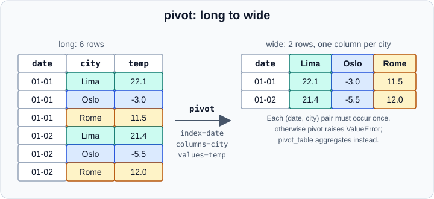

Pivot & Pivot Tables in pandas
|
This content was generated with the assistance of AI and should be verified against the official documentation before being relied on in production. |
Reshaping moves values between the rows and the columns of a table without changing the information it holds. This page
covers the operations that turn a long table (one row per observation) into a wide table (one column per category):
DataFrame.pivot, DataFrame.pivot_table, pd.crosstab and groupby(...).unstack(). The opposite direction is in
Melt, Stack & Explode. The page targets pandas 3.1 on Python 3.13 or
3.14 and was checked in October 2026. Every example was run with Python 3.13, NumPy 2.5.4 and pandas 3.1.0, and the
printed output is the real output.
All examples assume the standard import:
import pandas as pdLong and wide data
Long (or "tidy") data has one row per observation and is the natural input of groupby, plotting libraries and
statistical models. Wide data is easier for people to read and for matrix-style computations. Moving between the two is a
routine step of cleaning and analysis; see Data Cleaning & Preparation for the
tidy-data idea and Tidyverse and dplyr for the R equivalent
(pivot_wider).
DataFrame.pivot
pivot reshapes without aggregating: every (index, columns) pair must occur at most once. The three keywords choose the
row labels, the new column labels and the cell values.
df = pd.DataFrame({
"date": pd.to_datetime(["2026-01-01"] * 3 + ["2026-01-02"] * 3),
"city": ["Oslo", "Rome", "Lima"] * 2,
"temp": [-3.0, 11.5, 22.1, -5.5, 12.0, 21.4],
"rain": [1.2, 0.0, 0.1, 0.0, 3.4, 0.0]})
wide = df.pivot(index="date", columns="city", values="temp")
print(wide)
print(wide.columns)city Lima Oslo Rome
date
2026-01-01 22.1 -3.0 11.5
2026-01-02 21.4 -5.5 12.0
Index(['Lima', 'Oslo', 'Rome'], dtype='str', name='city')Note that the new columns are sorted, not kept in appearance order, and that the columns Index has the default str
dtype of pandas 3 and carries the name city. The figure shows the same reshaping with the cells coloured by city.

Omit values to pivot every remaining column; the result then has two column levels, the original column name and the
new category. Pass a list to values to choose several:
print(df.pivot(index="date", columns="city", values=["temp", "rain"])) temp rain
city Lima Oslo Rome Lima Oslo Rome
date
2026-01-01 22.1 -3.0 11.5 0.1 1.2 0.0
2026-01-02 21.4 -5.5 12.0 0.0 0.0 3.4index and columns accept a list of columns as well, which produces a MultiIndex (see
MultiIndex).
Duplicate entries
When a pair occurs twice pivot cannot decide which value to keep and raises:
dup = pd.concat([df, df.iloc[[0]]])
try:
dup.pivot(index="date", columns="city", values="temp")
except ValueError as err:
print("ValueError:", err)ValueError: Index contains duplicate entries, cannot reshapeEither remove the duplicates (see Duplicate Labels & Rows) or choose an
aggregation with pivot_table.
pivot_table
pivot_table is pivot plus aggregation: duplicates are combined with aggfunc, the default being the mean. It is the
spreadsheet pivot table; the comparison with spreadsheets is in
Coming from R & Spreadsheets.
sales = pd.DataFrame({
"region": ["N", "N", "S", "S", "S", "N"],
"product": ["a", "b", "a", "a", "b", "a"],
"channel": ["web", "shop", "web", "shop", "web", "web"],
"units": [3, 5, 2, 7, 4, 1],
"price": [2.5, 4.0, 2.5, 2.5, 4.0, 2.5]})
print(sales.pivot_table(index="region", columns="product", values="units"))product a b
region
N 2.0 5.0
S 4.5 4.0Source: pandas.pivot_table.
The default aggfunc="mean" gives the mean units per region and product: region N sold 3 and 1 units of product a, so
the cell is 2.0.
Parameters
| Parameter | Meaning |
|---|---|
|
Column or list of columns to aggregate. When omitted, every numeric column that is not a key is used. |
|
Column names, lists of names, arrays or |
|
A function, a function name, a list of them, or a dict that maps each value column to its own function. |
|
Replaces missing cells in the result. |
|
Add the row and column of totals; the label defaults to |
|
When |
|
For categorical keys, show only the observed combinations. The default is |
|
Sort the result by the group keys (default |
Totals, fill values and per-column functions
print(sales.pivot_table(index="region", columns="product", values="units",
aggfunc="sum", fill_value=0, margins=True, margins_name="Total"))
print(sales.pivot_table(index="region", columns="product", values=["units", "price"],
aggfunc={"units": "sum", "price": "mean"}))product a b Total
region
N 4 5 9
S 9 4 13
Total 13 9 22
price units
product a b a b
region
N 2.5 4.0 4 5
S 2.5 4.0 9 4Source: pandas.DataFrame.pivot_table.
A list of functions adds a column level for the function name, and a list of index columns builds a MultiIndex. Cells
without any observation are missing unless fill_value is given:
print(sales.pivot_table(index=["region", "channel"], columns="product", values="units",
aggfunc=["sum", "count"])) sum count
product a b a b
region channel
N shop NaN 5.0 NaN 1.0
web 4.0 NaN 2.0 NaN
S shop 7.0 NaN 1.0 NaN
web 2.0 4.0 1.0 1.0Source: pandas.DataFrame.pivot_table.
To count rows rather than aggregate a column, use aggfunc="size" without values:
print(sales.pivot_table(index="region", columns="product", aggfunc="size"))product a b
region
N 2 1
S 2 1Source: pandas.DataFrame.pivot_table.
Categorical keys and observed
With categorical keys the result can list every category, even those that never occur. pandas 3.0 changed the default of
observed to True, so unused categories are dropped; pass observed=False to restore the full grid:
cat = sales.assign(product=pd.Categorical(sales["product"], categories=["a", "b", "c"]))
print(cat.pivot_table(index="region", columns="product", values="units", aggfunc="sum"))
print(cat.pivot_table(index="region", columns="product", values="units", aggfunc="sum", observed=False))product a b
region
N 4 5
S 9 4
product a b c
region
N 4 5 0
S 9 4 0Source: pandas.DataFrame.pivot_table.
See Categorical Data and the same observed default in
Group By.
Grouping dates with Grouper
pd.Grouper bins a datetime column inside the pivot table, so there is no need to resample first:
ts = pd.DataFrame({"when": pd.date_range("2026-01-01", periods=6, freq="D"),
"k": list("xyxyxy"), "v": range(6)})
print(ts.pivot_table(index=pd.Grouper(key="when", freq="3D"), columns="k", values="v", aggfunc="sum"))k x y
when
2026-01-01 2 1
2026-01-04 4 8Source: pandas.pivot_table.
crosstab
pd.crosstab builds a frequency table from two or more array-like objects. It is a specialised pivot_table whose
default aggregation is a count:
print(pd.crosstab(sales["region"], sales["product"]))
print(pd.crosstab(sales["region"], sales["product"], values=sales["units"],
aggfunc="sum", normalize="index").round(3))
print(pd.crosstab(sales["region"], [sales["product"], sales["channel"]], margins=True))product a b
region
N 2 1
S 2 1
product a b
region
N 0.444 0.556
S 0.692 0.308
product a b All
channel shop web shop web
region
N 0 2 1 0 3
S 1 1 0 1 3
All 1 3 1 1 6normalize accepts "index" (row shares), "columns", "all" or a boolean. Unlike pivot_table, crosstab takes
Series or arrays, not column names, so it also works on data that is not in a single frame.
Source: pandas.crosstab.
groupby plus unstack
pivot_table is a shortcut for a groupby followed by unstack. Writing it by hand gives more control over the
aggregation and keeps the intermediate long result available:
print(sales.groupby(["region", "product"])["units"].sum().unstack(fill_value=0))product a b
region
N 4 5
S 9 4unstack and its inverse stack work on index levels and are covered in
Melt, Stack & Explode.
Choosing between them
| Need | Use | Why |
|---|---|---|
Reshape with unique keys, no aggregation |
|
Fails loudly on duplicates, which protects against silent aggregation. |
Spreadsheet-style summary with totals |
|
|
Counts or shares of two categorical columns |
|
Count by default and |
An aggregation that is not a simple function |
|
Named aggregation and custom functions; see Group By. |
Pitfalls
-
pivot_tablesilently averages duplicates. If you meant to detect duplicates, usepivotor checkdf.duplicated(subset=["date", "city"]).any()first. -
The default
aggfuncis"mean". For counts or totals pass"size"or"sum"explicitly. -
The columns of the result are sorted; reindex with
reindex(columns=[...])to impose an order. -
After a
pivotthe columnIndexhas a name (cityabove).reset_index()leaves that name incolumns.name, which shows up as a stray label when printing. Clear it withwide.columns.name = None. -
Large outputs: a pivot of a high-cardinality column creates one column per value. Check
df[col].nunique()before pivoting.
Older tutorials and books
| Older statement | Current state (pandas 3.1, October 2026) |
|---|---|
|
Since pandas 3.0 the default is |
|
|